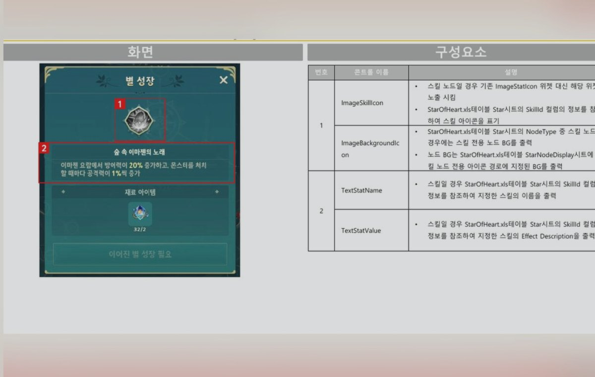
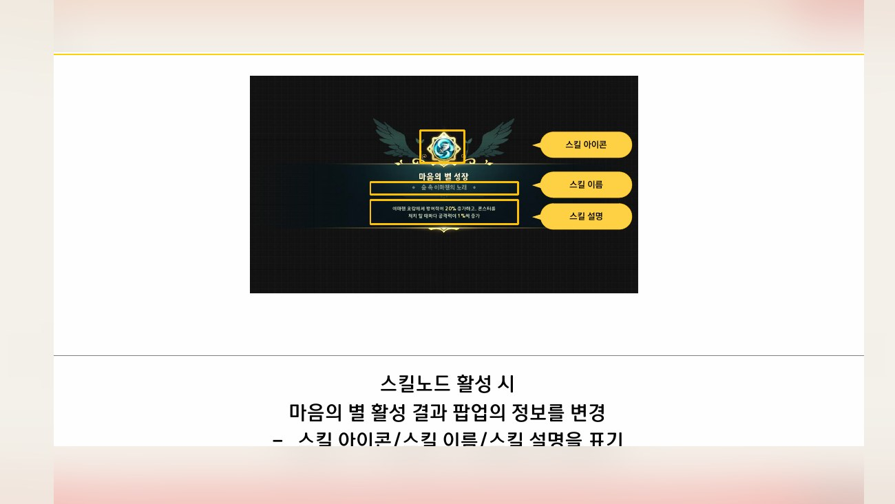
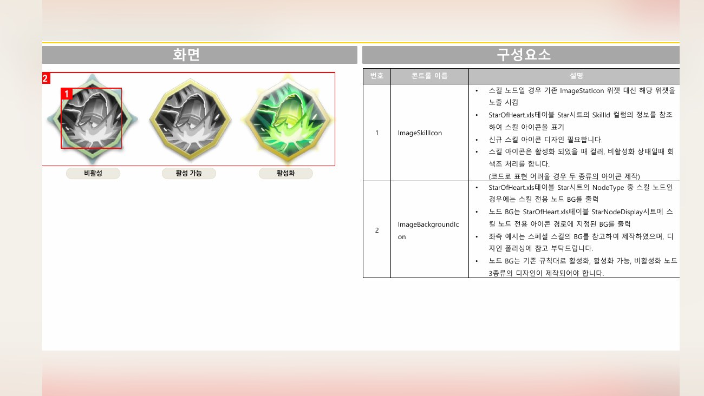
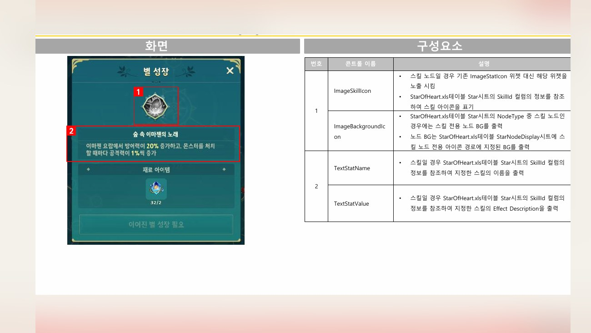
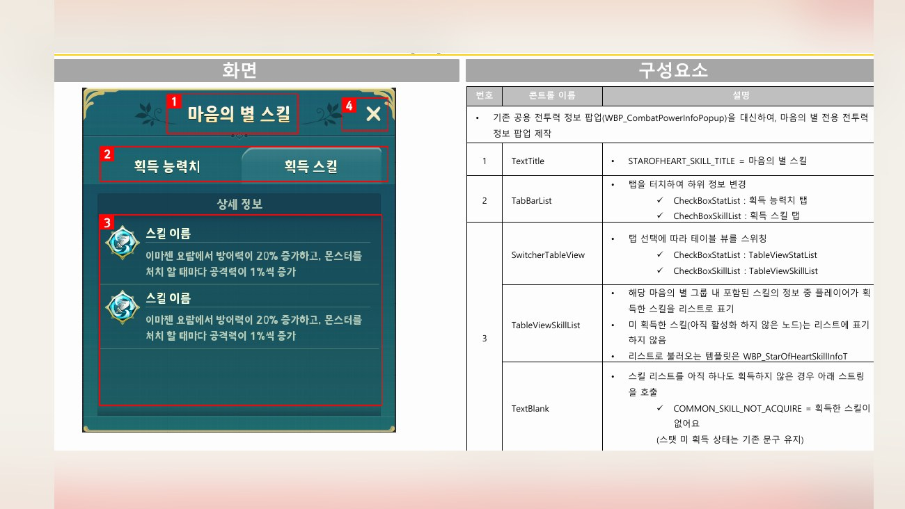

Planning Context
어떤 기획이었나
- 성장 시스템은 재화, 노드, 해금, 성장 결과가 복합적으로 연결되어 있어 유저가 현재 가능한 성장을 파악하기 어려울 수 있습니다.
- 인지 개선과 스킬 노드 개선, 일괄 성장처럼 서로 다른 개선이 같은 시스템 이해도를 높이는 방향으로 묶여야 했습니다.
ProjectN · Growth System
마음의 별 시스템의 인지, 성장, 스킬 노드, 일괄 성장 흐름을 정리한 성장 시스템 UX 사례입니다.

Planning Context
Process
Deliverables
Result
성장 시스템의 인지, 노드 선택, 성장 가능 상태를 연결해 반복 성장 흐름을 이해하기 쉽게 정리했습니다.
Deliverable Captures
원본 문서는 포함하지 않고, 포트폴리오 확인용으로 일부 페이지만 이미지화했습니다. 슬라이드 마스터/상하단 영역은 흐림 처리했습니다.



